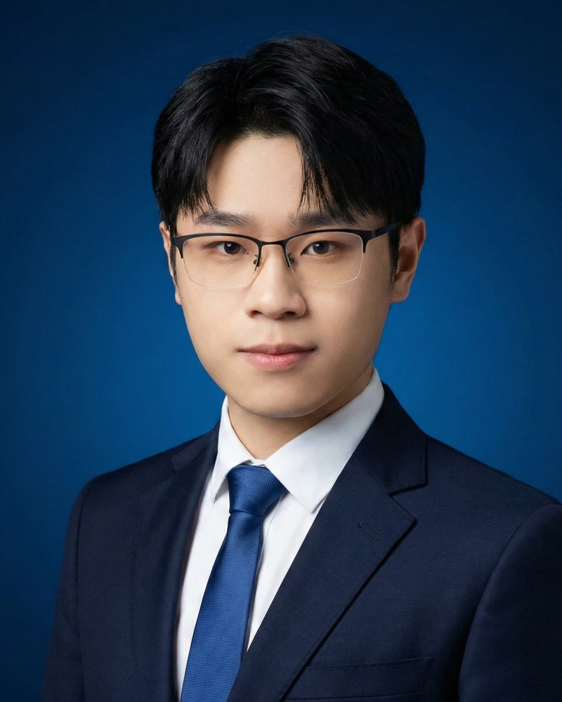
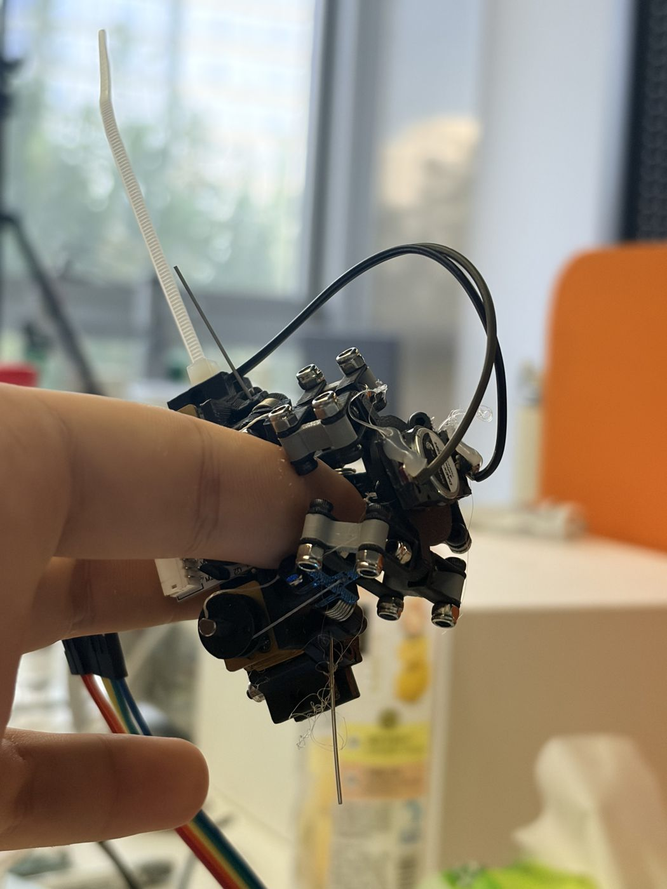
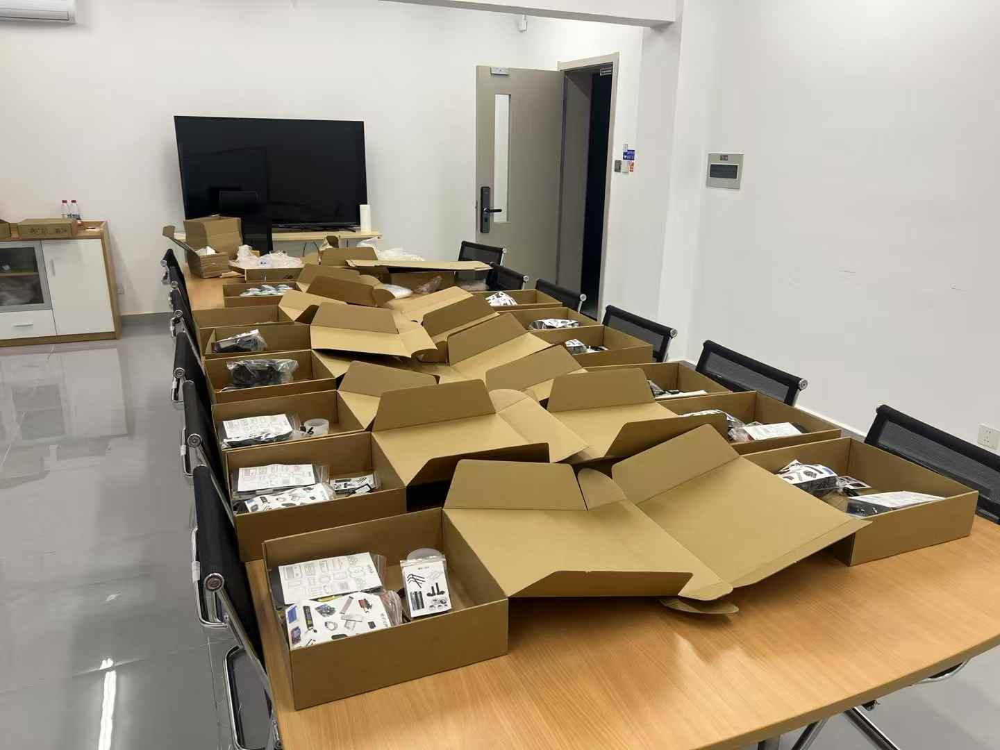
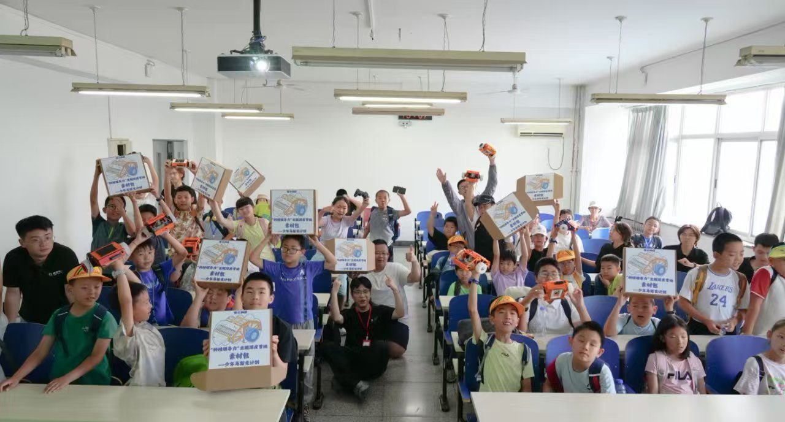
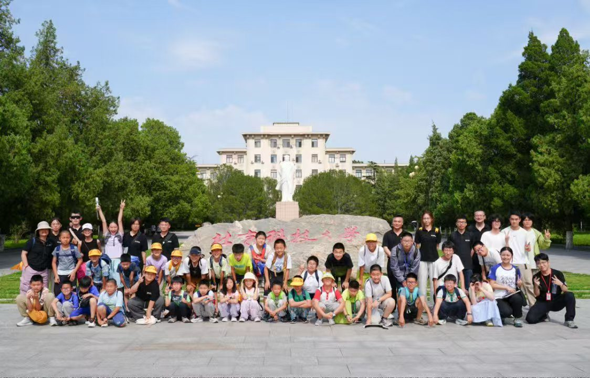
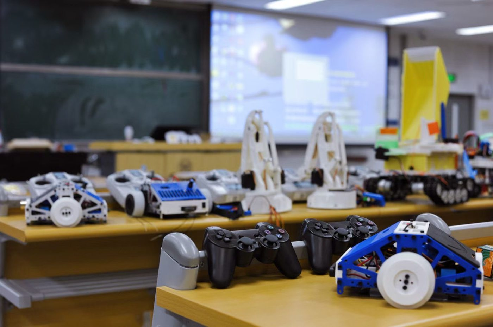
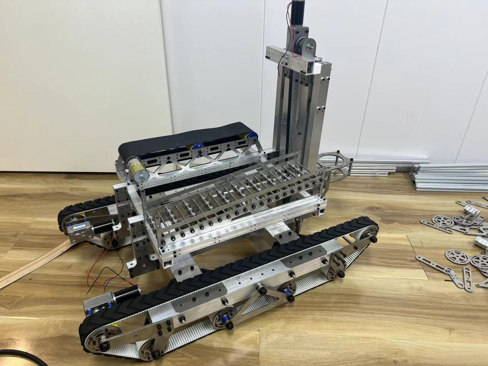

我造机器人，现在也造人教机器人的方式。仓颉创新创始人，做具身智能的人机回路。

今天教机器人的人，感受不到机器人摸到了什么。我看过一台机器人擦了一小时黑板，始终没擦干净。老师操作不好，教不出好学生。
基础模型对世界的先验已经足够强，缺的是干中学：一个真正"在"机器人身体里的人，在它犯错的那一刻把它纠正过来。
一个能接入任意"双臂 + 躯干 + 底盘"机器人的驾驶舱：全身控制、远程力反馈、指尖触觉，以及把每一次接管变成后训练数据的管线。
行业把遥操当成控制问题：让机器人跟住人的手。我们认为瓶颈在人：画面跟不上头，或者身体的动作出乎操作员意料，人就会晕、会慢。所以我们的全身控制器，优化的是操作员期待看到和感受到的东西：
同一套控制器，三台机器人。选一个本体看看：
纯位置遥操，要么把东西夹扁，要么压不到位。本地力反馈手感好，但离不开实验室。我们把力的闭环跨网络打通。
在 200 毫秒延迟下（约等于北京到华盛顿），远端机械臂仍能跟随操作员的手稳定地调整接触力，人在任何地方都能在策略执行中途把它纠正过来。
力告诉你多用力，触觉告诉你碰到的是什么。我们的触觉显示屏戴在指尖，一个装置同时输出三路信号：
操作员能分辨不同材质，感受到接触由硬变软的那一瞬间，这正是机器人需要学会的反射。

任务：刮玻璃。基础策略只会复现轨迹，刮刀从玻璃上空划过。操作员接管，做了策略从没学过的事：先顶到上边界，压住，一路贴着刮到底。模型学到这个关键接触事件，之后自己就会做了。
台机器人跑同一套遥操系统
模拟延迟下远程力控依然稳定
在指尖还原的接触纹理
美国连锁超市，首批合作意向方之一




